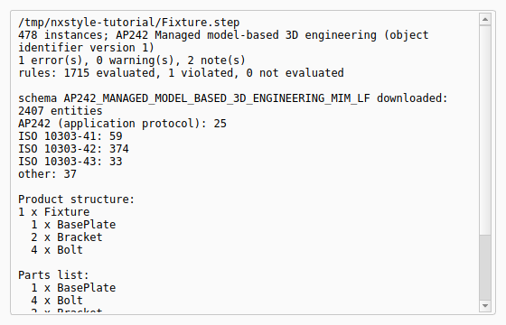

Tutorial AM: Receiving STEP: the application protocol, the BOM and an ISO 10303-112 sketch
| Standards |
ISO 10303-21, ISO 10303-242 (AP242: its long-form schema and its product structure), ISO 10303-112 (2D sketch commands), ISO 10303-55 (the command sequence) |
| You learn |
Check STEP with the application protocol’s own schema, reading a parts list from a STEP file, Import STEP with Parameters for a Part 112 sketch |
| Sizes |
A fixture: a plate 120 × 80 × 10, two brackets, four bolts; a bracket profile 60 × 40 with two R5 rounds, a Ø16 bore and four Ø4 holes on a 13 mm radius |
| Background |
Tutorial AL sends a part out and brings it back. This one is the receiving end: two files arrive from a supplier, and you want to know what they are, whether they are valid, what parts they hold, and to work with the sketch that came as commands.
Step by step
1. The supplier’s assembly
The fixture is assembled and exported by script with FreeCAD’s own STEP export, as the supplier’s system would send it: an AP242 file with a plate, two brackets (the second a link to the first) and four bolts (links to one bolt).
2. Check STEP against AP242’s own schema
PMI › Check STEP, the file, tick Download the AP’s schema if it is missing, OK.
The report names the application protocol, AP242 Managed model-based 3D engineering. The first time, it downloads AP242’s long-form schema from standards.iso.org (2407 entities) into the schema cache; after that it uses the cached copy. Every instance is checked against it, so the product structure and the B-rep shape representation are checked too, and every rule of the schema is evaluated, its global rules included.
One error comes back, and it is real: the file names its protocol 'ap242_managed_model_based_3d_engineering' in APPLICATION_PROTOCOL_DEFINITION, as FreeCAD’s STEP export (OpenCASCADE) writes it, but every AP242 long form from edition 2 on requires 'ap242_managed_model_based_3d_engineering_mim_lf' (rule ap242_application_protocol_definition_required).
Any system that reads the file still gets the geometry and the structure; a strict validator would reject it.
STEP with Parameters corrects the name in the files it writes.
The product structure is the bill of materials as the file holds it: the fixture with one plate, two brackets and four bolts, and the parts list with the totals.

3. The supplier’s sketch, as ISO 10303-112 commands
The second file is a bracket profile written by a system that sends sketches as Part 112 modelling commands rather than as finished curves. Here it is written by script, eight commands in an ISO 10303-55 sequence:
-
CREATE_RECTANGLEfrom three points; -
two
CREATE_FILLETR5 at the right-hand corners, each with its two sides picked withUSER_SELECTED_SHAPE_ELEMENTSand trimmed; -
CREATE_CIRCLE_CENTRE_POINTfor the Ø16 bore and for a Ø4 hole; -
CREATE_PATTERN_CIRCULARfor three more holes round the bore, 90° apart.
PMI › Check STEP on this file: 0 errors against ISO 10303-112’s schema.
The replay
| # | In the book (NX) | In FreeCAD NX-Style | Result | Notes |
|---|---|---|---|---|
AM1 |
The supplier’s fixture as STEP AP242: a plate, two brackets, four bolts (one bracket and the bolts as links) |
assembled and exported by script with FreeCAD’s own STEP export |
differs |
21160 bytes |
AM2 |
Check STEP with 'Download the AP’s schema': the application protocol named, every entity and every rule checked against AP242’s own long form, the product structure listed |
ribbon 'PMI › Exchange > Check STEP', file name typed, the box ticked, MB2 = OK |
differs |
1 error(s), 0 warning(s), 2 note(s) (the protocol name FreeCAD writes: True); rules: 1715 evaluated, 1 violated, 0 not evaluated; checked against AP242’s long form: True; parts list: 1 x BasePlate; 2 x Bracket; 4 x Bolt; 1 x BasePlate; 4 x Bolt; 2 x Bracket. NX has no STEP checker; its BOM comes from the assembly navigator |
AM3 |
The supplier’s bracket profile as ISO 10303-112 commands: a rectangle, two R5 rounds (fillets with trimming), a Ø16 bore, a Ø4 hole and its circular pattern |
the file written by script, as another CAD system would send it |
differs |
8 commands |
AM4 |
Check STEP on the sketch file: the Part 112 commands against ISO 10303-112’s schema |
ribbon 'PMI › Exchange > Check STEP', file name typed, MB2 = OK |
differs |
0 error(s), 0 warning(s), 1 note(s); ISO 10303-112: 6 instances of ISO 10303-112 entities |
AM5 |
New part, Import STEP with Parameters: the commands evaluated into a FreeCAD sketch |
Ctrl+N, ribbon 'PMI › Exchange > Import STEP with Parameters', the file typed, MB2 = OK |
differs |
one sketch: {'LineSegment': 4, 'ArcOfCircle': 2, 'Circle': 5}, every wire closed: True; Part 112 does not position a sketch, so it lies on XY. NX imports a STEP sketch as curves without its history |
AM6 |
Extrude the received profile 8 mm: the bracket |
Pad by script on the imported sketch |
differs |
volume 17103.5400 mm³, expected 17103.5400 (60 × 40 less two R5 corners, the Ø16 bore and four Ø4 holes, times 8): the commands' geometry is exact |
AM7 |
The bracket from the received profile |
render of the graphics window |
same |
22.9% of the view shows the part (an occupancy check: something is drawn; the shape itself is checked by its geometry) |
| Result | Means |
|---|---|
same |
The book’s NX steps work as written. |
differs |
It works, but the FreeCAD way is different; the notes say how. |
limit |
The book’s way fails in FreeCAD itself; a workaround follows in the next steps. |
missing |
FreeCAD has no such function; a stand-in follows. |
skipped |
Not replayed; the notes give the reason. |
FAILED |
Did not work. |
What differs from NX
-
NX has no STEP checker; its parts list comes from the Assembly Navigator after import.
-
NX reads a STEP file’s sketch as curves. ISO 10303-112 commands are evaluated here, so the sketch keeps how it was made: the rounds trim their sides and the pattern copies its hole.
-
The cache keeps one schema per name: fetching AP242 again, or adding another AP242 edition, replaces it.
-
The supplier’s files are written by script; the bracket is extruded by script.